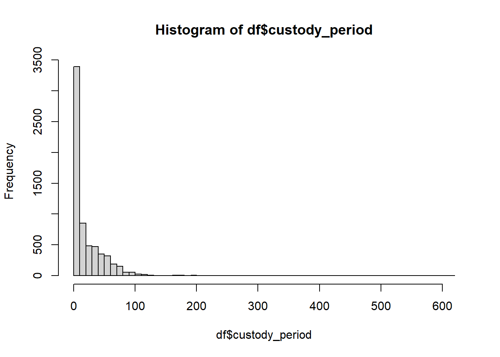

Main types of neural networks
- Artificial neural network (ANN)
- Convolutional neural network (CNN)
- Recurrent neural network (RNN)
If you’d like to follow along in R, you can download the script here: neuralNet.R
All of the materials for this lecture/demo are also available on GitHub
“A neural network is the second best way to solve any problem. The best way is to actually understand the problem.” - Unknown
The above example shows a very simplistic convolutional neural network used to detect numbers from an image.
Sidenote: you can create CNNs in r, however they are not fun to make in r.
A neural network is a parallel, distributed information processing structure consisting of processing elements (nodes) interconnected together with unidirectional signal channels. Each node has a single output connection which branches into as many collateral connections as desired. The node’s output signal can be of any mathematical value (can later be converted to non-numerical values). All of the processing that goes on within each node must depend only upon the values of the received input signals arriving at the node via incoming connections and upon values stored in the node’s local memory (Hecht-Nielsen 1992).
Neural networks are a subset of machine learning that are an amalgamation of modern computer science and cognitive psychology. The data processing and analysis is based on the same process that your brains’ neurons undergo to process information. Your neurons require a certain amount of activation energy in order to fire and send information beyond the neuron and along to the axon, synapses, to other neurons and so on, an input requirement known as action potential.

Basic principle of Perceptron model.
Originally, scientists were simply interested if they could recreate how the human brain works; they really didn’t have any desire to make this concept much more than a concept. After WWII and Alan Turing’s creation of what would become the modern day computer, scientists that were able to get their hands on this technology could turn it loose on whatever they could imagine including early neural networks. For the next few decades, the theory of artificial intelligence and neural networks developed faster than technology could to support it until modern computer processors and parallel computing caught up with the all of the theory (Moore’s law). Now the opposite seems to be true and computing power is allowing for a lot more applications of neural networks and the sky is the limit for real-world applications.

Neural networks are currently the fastest growing research topic (Google scholar) as well as one of the most well-funded research areas. Most of Nature’s most cited papers are based on neural network research (Lek et al. 2016). They are capable of filling in analytical gaps where other statistical methods simply fall short. While they process information the same way our brains do, they are capable of finding patters that we simply are not capable of.
Neural networks vary A LOT in structure, but most of them have relatively similar components and building blocks.

Structure of a simple deep learning model
A node is simply a container for a value with one or more weighted input connections, with the exception of the input layer which has yet to be passed beyond the first input layer.
The input layer consist of whatever data you are choosing to help predict your desired result. These come in many varieties and number of input layers, but each input node always represents a single floating point value. For the network we will be generating in R, it requires all of our values be between 0 and 1 (requires scaling)
This is our result. For classification-type models (i.e. what do object does the given input describe?), it will generate a value ranging from 0-1. In an ideal world, it would either be 0 or 1 each time, but it usually varies and whichever value it is closest to is the generated prediction. For numerical outputs, we have to rescale to get usable output variables.
A value that will change an input value to a node from the previous layer depending upon its significance. Weights are multiplied by the input value at your node.
Bias value is added to the above multiplication of the weight and input at the node. You can think of this bias value as the equivalent of a y-intercept in a linear model.
Once we have successfully trained a properly fitted model, we then have to implement it. In many data science cases this is relatively straightforward, however if being implemented in real-time this can be a very difficult and critical step to retrieve useful data. This process is usually referred to as your forward pass or inference step. You may see models referred to as “forward feeding” and this simply means that data is moving from your input to your output layer.
While neural networks are incredibly powerful and useful tools, they come with their caveats.
This is one area of similarity that neural networks share with other models. Overfitting is a very common issue encountered while training a neural network, however it is rather easily avoidable if properly monitored and input parameters are adjusted accordingly. - Don’t train model for excessive amount of steps/epochs - Play around with your learning rate: simply models don’t require a slow learning rate - If all else fails, try different backpropogation methods

Useful diagram depicting overfitting of various models
Let’s start with a simple example from the iris dataset (sorry)
library(dplyr)
library(neuralnet)
library(stringr)
library(LaplacesDemon)head(iris)## Sepal.Length Sepal.Width Petal.Length Petal.Width Species
## 1 5.1 3.5 1.4 0.2 setosa
## 2 4.9 3.0 1.4 0.2 setosa
## 3 4.7 3.2 1.3 0.2 setosa
## 4 4.6 3.1 1.5 0.2 setosa
## 5 5.0 3.6 1.4 0.2 setosa
## 6 5.4 3.9 1.7 0.4 setosasummary(iris$Species) #this is our output layer, or what we are predicting## setosa versicolor virginica
## 50 50 50Here we see that our output layer represents a perfectly uniform distribution so this is as idea as we can get as far as training is concerned.
cleanedIris <- model.matrix(~ Sepal.Length + Sepal.Width + Petal.Length + Petal.Width + Species,data=iris)
cleanedIris <- cleanedIris/max(cleanedIris)
head(cleanedIris)## (Intercept) Sepal.Length Sepal.Width Petal.Length Petal.Width
## 1 0.1265823 0.6455696 0.4430380 0.1772152 0.02531646
## 2 0.1265823 0.6202532 0.3797468 0.1772152 0.02531646
## 3 0.1265823 0.5949367 0.4050633 0.1645570 0.02531646
## 4 0.1265823 0.5822785 0.3924051 0.1898734 0.02531646
## 5 0.1265823 0.6329114 0.4556962 0.1772152 0.02531646
## 6 0.1265823 0.6835443 0.4936709 0.2151899 0.05063291
## Speciesversicolor Speciesvirginica
## 1 0 0
## 2 0 0
## 3 0 0
## 4 0 0
## 5 0 0
## 6 0 0This dataframe snippet shows the format necessary for the neuralnet() function in R. To properly process the data, all of the values need to be between 0 and 1.
irisNN <- neuralnet(Speciesversicolor+Speciesvirginica~Sepal.Length+Sepal.Width+Petal.Length+Petal.Width,
cleanedIris, hidden=1,algorithm="rprop+",
learningrate=0.01, linear.output=F)
plot(irisNN)
While the iris dataset is painful to look at, it is very useful for generating a strong correlation and creating a simple, interpretable model. For now, lets not worry about the forward pass portion. So let’s walk through this a bit.

Formula for the basic perceptron model

Thanks to some friends that work over at the Nevada Humane Society, I was able to get my hands on their largescale dataset (n>10000) for animal adoptions. This provided a good opportunity to create a neural network to predict residency times for incoming animals to the shelter, useful for understanding resource allocation for shelter pets. So lets look at some data.
Click here to download the data for this example
df <- read.csv('nhseData.csv')
df <- df[!duplicated(df[,c("Name", "Species")]),]
head(df)## Created.Date Name Species Primary.Breed Sex Age..Months.
## 1 03/13/2020 Luna Dog Pinscher, Miniature Female 146
## 4 01/30/2020 BUDDY Dog Terrier, Yorkshire, Yorkie Male 122
## 5 03/05/2020 BUDDAH Cat Domestic Longhair Female 74
## 7 02/05/2020 SASSY Dog Rottweiler Female 106
## 8 01/27/2020 Biscuit Dog Terrier, Jack Russell Female 188
## 10 02/07/2020 Frankie Dog Beagle Male 183
## Age.Group Primary.Color Days.in.Custody Days.on.Site
## 1 Senior (8+years) Black 1 1
## 4 Senior (8+years) Brown 1 1
## 5 Adult Cat (5-10 years) White 3 3
## 7 Senior (8+years) Black 1 1
## 8 Senior (8+years) White 1 1
## 10 Senior (8+years) Brown 1 1
## Current.Weight Attributes
## 1 9.4 lbs Angel Pet
## 4
## 5 11.38 lbs
## 7
## 8 25.4 lbs
## 10 31 lbsdf %>% filter(Name=="Donut") #This is my pup## Created.Date Name Species Primary.Breed Sex Age..Months.
## 1 07/15/2021 Donut Dog Terrier, American Pit Bull Male 7
## Age.Group Primary.Color Days.in.Custody Days.on.Site
## 1 Adult Dog (5 months-8 years) Black 108 8
## Current.Weight
## 1 56.5 lbs
## Attributes
## 1 D2D Required,Heart Murmur,Kids under 6 meet first,Unavailable - waiting for medical proceduredf$Age.Group <- str_remove_all(df$Age.Group," \\(.*?\\)")
df$Age.Group <- str_replace_all(df$Age.Group,"Juvenile|Kitten|Puppy|Unweaned","juvenile")
df$Age.Group <- str_replace_all(df$Age.Group,"Adult Cat|Adult Dog|Adult|Young adult","adult")
df$Age.Group <- str_replace_all(df$Age.Group,"Senior","senior")
df$Current.Weight <- as.numeric(str_extract_all(df$Current.Weight,"\\d{0,3}.\\d{1,2}"))
df$Sex <- str_replace_all(df$Sex,"Male","male")
df$Sex <- str_replace_all(df$Sex,"Female","female")
df$Sex <- str_replace_all(df$Sex,"Unknown","unknown")
df$Species <- str_replace_all(df$Species,"Bird, Unspecified|Chicken, Domestic|Conure, Unspecified|Parakeet, Common|Parakeet, Unspecified","bird")
df$Species <- str_replace_all(df$Species,"Lizard, Unspecified|Snake, Python Unspecified|Tortoise, Unspecified|Turtle, Red-Eared Slider|Turtle, Unspecified","reptile")
df$Species <- str_replace_all(df$Species,"Chinchilla|Ferret|Guinea Pig|Hamster, Dwarf|Hamster, Unspecified|Hedgehog|Mouse, Little Pocket|Mouse, Unspecified|Rabbit, Domestic|Rat, Unspecified|Sugar Glider","small_mammal")
df$Species <- str_replace_all(df$Species,"Dog","dog")
df$Species <- str_replace_all(df$Species,"Cat","cat")df <- dplyr::rename(df, c(species = Species,
breed = Primary.Breed,
sex = Sex,
age = Age..Months.,
age_group = Age.Group,
weight_lbs = Current.Weight,
custody_period = Days.in.Custody)) %>%
select(species,sex,age_group,age,weight_lbs,custody_period) %>%
na.omit()
rownames(df) <- 1:nrow(df)
df_check <- df[-c(2860,755,5856,4709,5189),] #removing some outliers that are annoying me
head(df_check)## species sex age_group age weight_lbs custody_period
## 1 dog female senior 146 9.40 1
## 2 cat female adult 74 11.38 3
## 3 dog female senior 188 25.40 1
## 4 dog male senior 183 31.00 1
## 5 cat female adult 99 8.40 1
## 6 dog female adult 75 70.80 28Here we have a cleaner, more interpretable dataframe, where we can see the basis of our input layer and our output layer. Depending upon the dataset, adding more input layers can improve model accuracy but the hidden layers tend to have more relevance in model performance.
formatted_df <- model.matrix(~ species + sex + age_group + age + weight_lbs + custody_period,data=df_check)
maxVal <- max(formatted_df) #variable stored to unscale our dataframe, important for later
formatted_df <- formatted_df/maxVal
head(formatted_df)## (Intercept) speciesdog speciesreptile speciessmall_mammal sexmale
## 1 0.001636661 0.001636661 0 0 0.000000000
## 2 0.001636661 0.000000000 0 0 0.000000000
## 3 0.001636661 0.001636661 0 0 0.000000000
## 4 0.001636661 0.001636661 0 0 0.001636661
## 5 0.001636661 0.000000000 0 0 0.000000000
## 6 0.001636661 0.001636661 0 0 0.000000000
## sexunknown age_groupjuvenile age_groupsenior age weight_lbs
## 1 0 0 0.001636661 0.2389525 0.01538462
## 2 0 0 0.000000000 0.1211129 0.01862520
## 3 0 0 0.001636661 0.3076923 0.04157119
## 4 0 0 0.001636661 0.2995090 0.05073650
## 5 0 0 0.000000000 0.1620295 0.01374795
## 6 0 0 0.000000000 0.1227496 0.11587561
## custody_period
## 1 0.001636661
## 2 0.004909984
## 3 0.001636661
## 4 0.001636661
## 5 0.001636661
## 6 0.045826514Recall that we need 80% of our data for training our model and 20% for testing, so lets go ahead and break it up accordingly and randomly to avoid accidentally fitting our model to specific attributes.
set.seed(70) #sample pseudo-randomly for replication sake
sampleSize <- round(nrow(formatted_df)*0.8) #split up dataset 80/20
rowIndex <- sample(seq(nrow(formatted_df)),size=sampleSize)
training_data <- formatted_df[rowIndex,] #what will be passed into the model training function
testing_data <- formatted_df[-rowIndex,]
groundtruth_data <- testing_data[,11]*maxValnn <- neuralnet(custody_period~speciesdog+speciesreptile+speciessmall_mammal+sexmale+sexunknown+age_groupjuvenile+age_groupsenior+age+weight_lbs,
training_data,
hidden=c(5,2), learningrate=0.01,
linear.output=T)
nn$result.matrix## [,1]
## error 7.405961625
## reached.threshold 0.009361145
## steps 788.000000000
## Intercept.to.1layhid1 -0.669454459
## speciesdog.to.1layhid1 48.286292198
## speciesreptile.to.1layhid1 77.818053946
## speciessmall_mammal.to.1layhid1 77.082353239
## sexmale.to.1layhid1 -13.343925495
## sexunknown.to.1layhid1 77.342705951
## age_groupjuvenile.to.1layhid1 49.993137322
## age_groupsenior.to.1layhid1 -32.138882110
## age.to.1layhid1 -0.502998393
## weight_lbs.to.1layhid1 10.725454157
## Intercept.to.1layhid2 -0.940134230
## speciesdog.to.1layhid2 43.253697994
## speciesreptile.to.1layhid2 -78.266402185
## speciessmall_mammal.to.1layhid2 -78.241516751
## sexmale.to.1layhid2 -2.911871820
## sexunknown.to.1layhid2 -78.275226887
## age_groupjuvenile.to.1layhid2 -45.115216766
## age_groupsenior.to.1layhid2 70.709006746
## age.to.1layhid2 -4.319523604
## weight_lbs.to.1layhid2 -20.925963243
## Intercept.to.1layhid3 0.225179631
## speciesdog.to.1layhid3 -41.433207557
## speciesreptile.to.1layhid3 74.390181721
## speciessmall_mammal.to.1layhid3 76.193061968
## sexmale.to.1layhid3 67.297149620
## sexunknown.to.1layhid3 77.244538993
## age_groupjuvenile.to.1layhid3 51.166889065
## age_groupsenior.to.1layhid3 -45.499212530
## age.to.1layhid3 -0.357394975
## weight_lbs.to.1layhid3 15.193308277
## Intercept.to.1layhid4 0.254675689
## speciesdog.to.1layhid4 48.309648565
## speciesreptile.to.1layhid4 -76.188546178
## speciessmall_mammal.to.1layhid4 -78.904338577
## sexmale.to.1layhid4 -29.761526120
## sexunknown.to.1layhid4 -78.316649093
## age_groupjuvenile.to.1layhid4 -48.347582963
## age_groupsenior.to.1layhid4 -36.571978203
## age.to.1layhid4 -18.571791871
## weight_lbs.to.1layhid4 -45.109170342
## Intercept.to.1layhid5 -0.027144794
## speciesdog.to.1layhid5 76.049750218
## speciesreptile.to.1layhid5 75.400192866
## speciessmall_mammal.to.1layhid5 59.580922621
## sexmale.to.1layhid5 -29.341353767
## sexunknown.to.1layhid5 77.066608078
## age_groupjuvenile.to.1layhid5 54.864635323
## age_groupsenior.to.1layhid5 26.074362613
## age.to.1layhid5 -3.945598044
## weight_lbs.to.1layhid5 -4.216351590
## Intercept.to.2layhid1 -1.935453082
## 1layhid1.to.2layhid1 -1.527753827
## 1layhid2.to.2layhid1 -1.967246059
## 1layhid3.to.2layhid1 1.062721854
## 1layhid4.to.2layhid1 -7.652037630
## 1layhid5.to.2layhid1 -4.095752889
## Intercept.to.2layhid2 -2.093905032
## 1layhid1.to.2layhid2 -2.953768412
## 1layhid2.to.2layhid2 6.414406312
## 1layhid3.to.2layhid2 -1.252861574
## 1layhid4.to.2layhid2 1.452407020
## 1layhid5.to.2layhid2 -0.700316380
## Intercept.to.custody_period -0.017285357
## 2layhid1.to.custody_period 1.299287416
## 2layhid2.to.custody_period 0.568964559plot(nn)Here we get a few interesting metrics from the network training. The primary one we are interested in is the error value, we ideally want this to be 0 however that won’t happen. But we can take steps to minimize it.
computedNN <- compute(nn,testing_data)$net.result #this is the forward pass or inference phase of the network
head(computedNN)## [,1]
## 3 0.06147906
## 4 0.06536534
## 5 0.03580975
## 13 0.02267256
## 22 0.02414354
## 25 0.04306530predicted_values <- computedNN * maxVal #Here we are taking the output from our neuralnet and unscaling it to make the outputs usable
head(predicted_values)## [,1]
## 3 37.56370
## 4 39.93822
## 5 21.87976
## 13 13.85293
## 22 14.75170
## 25 26.31290plot(groundtruth_data, predicted_values, col='red', pch=1,
xlim = c(0,200), ylim = c(0,200), cex=0.75,
ylab = "predicted days in shelter", xlab = "actual days in shelter",
main = "NHSE Custody Period Prediction")
abline(a=0,b=1) #This b=1 line shows what the data would look like in an idea scenariosum((groundtruth_data - predicted_values)^2)/length(groundtruth_data) #Sum of squared errors normalized by length of the dataset## [1] 816.1444So this doesn’t look terrible, but what looks wrong here? (hint: think back to one of the few “assumptions” of neural network training)
Hopefully someone answered my question so I’m not quietly standing up here wishing I had done this with a group.
hist(df$custody_period,breaks=50)
This is incredibly not uniform. So lets try to fix that a little bit. Let’s pick up at a checkpoint dataframe
df_check <- df_check %>% filter(custody_period <= 40)
hist(df_check$custody_period,breaks=50)Not perfect, but nothing in life ever is, so good enough.
formatted_df <- model.matrix(~ species + sex + age_group + age + weight_lbs + custody_period,data=df_check)
maxVal <- max(formatted_df) #variable stored to unscale our dataframe, important for later
formatted_df <- formatted_df/maxVal
head(formatted_df)## (Intercept) speciesdog speciesreptile speciessmall_mammal sexmale
## 1 0.003831418 0.003831418 0 0 0.000000000
## 2 0.003831418 0.000000000 0 0 0.000000000
## 3 0.003831418 0.003831418 0 0 0.000000000
## 4 0.003831418 0.003831418 0 0 0.003831418
## 5 0.003831418 0.000000000 0 0 0.000000000
## 6 0.003831418 0.003831418 0 0 0.000000000
## sexunknown age_groupjuvenile age_groupsenior age weight_lbs
## 1 0 0 0.003831418 0.5593870 0.03601533
## 2 0 0 0.000000000 0.2835249 0.04360153
## 3 0 0 0.003831418 0.7203065 0.09731801
## 4 0 0 0.003831418 0.7011494 0.11877395
## 5 0 0 0.000000000 0.3793103 0.03218391
## 6 0 0 0.000000000 0.2873563 0.27126437
## custody_period
## 1 0.003831418
## 2 0.011494253
## 3 0.003831418
## 4 0.003831418
## 5 0.003831418
## 6 0.107279693set.seed(70) #sample pseudo-randomly for replication sake
sampleSize <- round(nrow(formatted_df)*0.8) #split up dataset 80/20
rowIndex <- sample(seq(nrow(formatted_df)),size=sampleSize)
training_data <- formatted_df[rowIndex,] #what will be passed into the model training function
testing_data <- formatted_df[-rowIndex,]
groundtruth_data <- testing_data[,11]*maxValnn <- neuralnet(custody_period~speciesdog+speciesreptile+speciessmall_mammal+sexmale+sexunknown+age_groupjuvenile+age_groupsenior+age+weight_lbs,
training_data,
hidden=c(5,2), learningrate=0.01,
linear.output=T)
#nn$result.matrix #new neural network weights and biases
plot(nn)computedNN <- compute(nn,testing_data)$net.result #this is the forward pass or inference phase of the network
predicted_values <- computedNN * maxVal #Here we are taking the output from our neuralnet and unscaling it to make the outputs usable
head(predicted_values)## [,1]
## 3 7.750194
## 4 8.379116
## 7 7.182494
## 13 8.847443
## 20 13.411501
## 22 9.489674Now that is a healthy improvement on error, so lets give it a run.
plot(groundtruth_data, predicted_values, col='red', pch=1,
xlim = c(0,45), ylim = c(0,45), cex=0.75,
ylab = "predicted days in shelter", xlab = "actual days in shelter",
main = "NHSE Custody Period Prediction")
abline(a=0,b=1) #This b=1 line shows what the data would look like in an idea scenariosum((groundtruth_data - predicted_values)^2)/length(groundtruth_data) #Sum of squared errors normalized by length of the dataset## [1] 96.8648This numerical value shows just about an order of magnitude improvement from our last model fitting the data. The visuals of this graph are much better, but we can still see there is a cap on prediction value. We can still see that there is a much higher density of data on the lower end of the days in shelter values.
So what can we do to resolve this?
Instead of chopping data on the tail end like we did, we can thin the data across the range of the training dataset to better achieve this uniform distribution.
This is also a very simple model, we could have included many more variables as inputs to improve model accuracy. For example, my dog would be predicted to be out of the shelter relatively quickly based on the model criteria, however the model didn’t take into account he has a heart condition.
Additionally, we could have included hidden layers with more dimensionality to try and find more subtle patterns in our data, but I don’t think this would work that well without adding in additional input values (could potentially lead to overfitting).
Lets make a mockup of three animals: a 3 month old, male puppy roughly german shepherd sized, a 10 month old chinchilla with unknown sex, and a 1 year old female cat that weighs 8 lbs. Let’s see what it says!
speciesdog = c(1,0,0)
speciesreptile = c(0,0,0)
speciessmall_mammal = c(0,1,0)
sexmale = c(1,0,0)
sexunknown = c(0,1,0)
age_groupjuvenile = c(1,0,1)
age_groupsenior = c(0,1,0)
age = c(3,10,12)
weight_lbs = c(15,1,8)
testPred <- data.frame(speciesdog,speciesreptile,speciessmall_mammal,
sexmale,sexunknown,age_groupjuvenile,age_groupsenior,
age,weight_lbs)
testPred <- testPred/maxVal
head(testPred) ## speciesdog speciesreptile speciessmall_mammal sexmale sexunknown
## 1 0.003831418 0 0.000000000 0.003831418 0.000000000
## 2 0.000000000 0 0.003831418 0.000000000 0.003831418
## 3 0.000000000 0 0.000000000 0.000000000 0.000000000
## age_groupjuvenile age_groupsenior age weight_lbs
## 1 0.003831418 0.000000000 0.01149425 0.057471264
## 2 0.000000000 0.003831418 0.03831418 0.003831418
## 3 0.003831418 0.000000000 0.04597701 0.030651341testRunNN <- round(compute(nn, testPred)$net.result * maxVal) #run the neural net prediction and rescaling it for usable results
testRunNN## [,1]
## [1,] 2
## [2,] 12
## [3,] 7Here we see the prediction: the puppy would be in the shelter for 2 days, the chinchilla for 11, and the cat for 7 days. Based on casually looking through some of the training data this seems like a reasonable response.
Success!
Like I mentioned earlier, these models only get better the more data that is collected. As ecological research scales with modern remote sensing and large scale data collection, neural networks are going to become increasingly relevant in both data collection as well as interpretation.